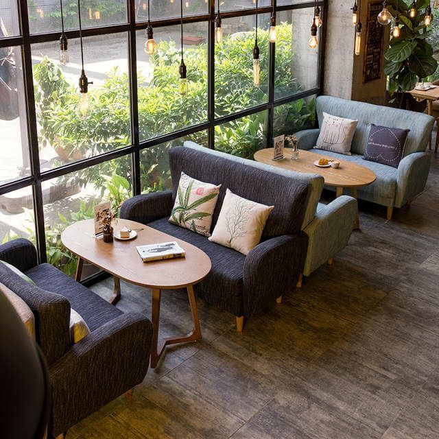
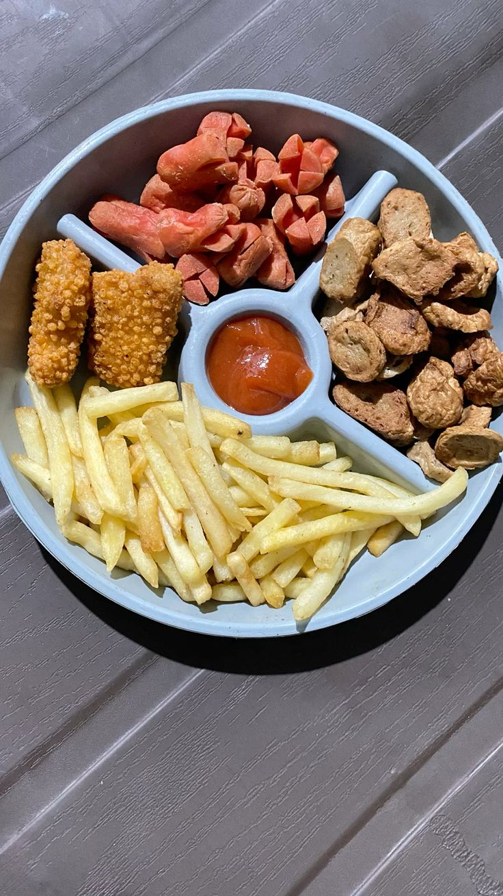

TEKNIK BREWING
Cara menyeduh kopi bukan sekadar menuang air—setiap teknik memberi karakter rasa yang berbeda di setiap tegukan.
Baca Artikel →Menikmati senja dengan secangkir kopi pilihan dan suasana yang menenangkan. Rasakan kehangatan di setiap momen bersama Setengahenam.
Lihat Menu


Para pengopi di Indonesia suka membaca informasi ini. Kamu?

Cara menyeduh kopi bukan sekadar menuang air—setiap teknik memberi karakter rasa yang berbeda di setiap tegukan.
Baca Artikel →
Dua jenis kopi, dua karakter berbeda—pilih yang sesuai dengan selera, apakah halus dan asam atau kuat dan pahit.
Baca Artikel →
Tingkat sangrai menentukan segalanya—mulai dari rasa ringan hingga pahit yang kuat, semua ada di proses ini.
Baca Artikel →Ngopi bukan cuma soal rasa, tapi juga suasana—temukan tempat nyaman dengan harga ramah dan tampilan yang estetik.
Baca Artikel →